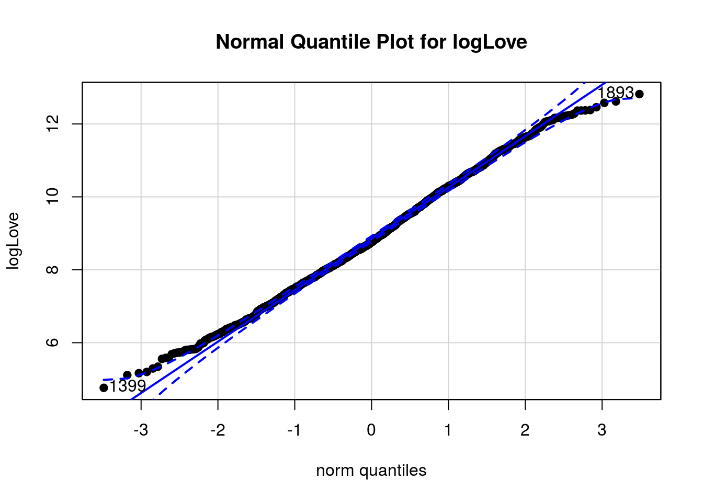
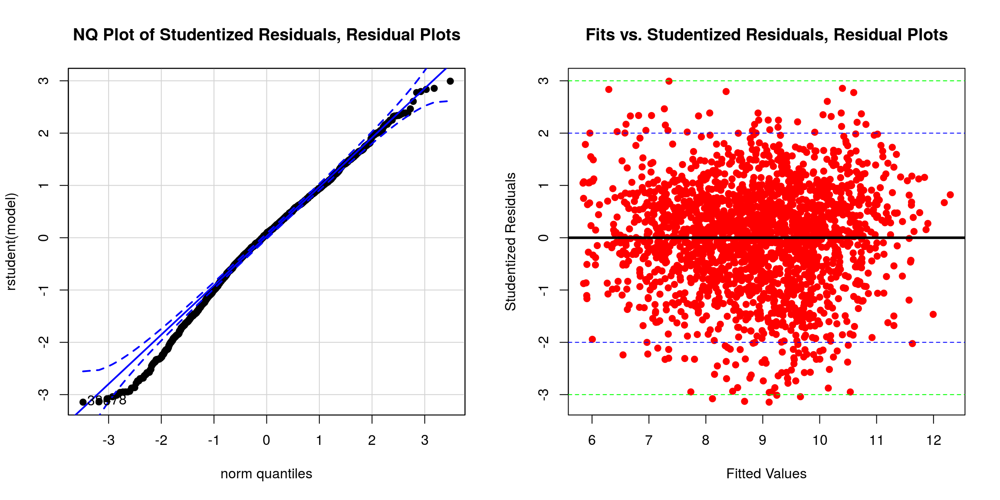

Case Study 4: Building a linear model for logLove.
Normal Distribution
First, we want to make sure that our response variable is normally distributed by looking at its normal quantile plot.

The quantile plot for logLove looks relatively linear, so we can say that the distribution of logLove across products is approximately normal.
Backwards Stepwise Regression
In order to see which variables we should use for the linear model, we will use backwards stepwise regression: We will start off by including all variables in the dataset, and then take out insignificant predictors one at a time until we got a final the model whose predictors are all significant. The final model we got is below.
mLove <- lm(logLove ~ logReview + logPPO + Category + Clean + PalmOil)
Anova(mLove, type = 3)## Anova Table (Type III tests)
##
## Response: logLove
## Sum Sq Df F value Pr(>F)
## (Intercept) 1217.97 1 2954.1836 < 2.2e-16 ***
## logReview 2615.81 1 6344.6626 < 2.2e-16 ***
## logPPO 3.12 1 7.5637 0.006009 **
## Category 55.25 9 14.8908 < 2.2e-16 ***
## Clean 2.69 1 6.5334 0.010659 *
## PalmOil 3.66 1 8.8672 0.002938 **
## Residuals 834.05 2023
## ---
## Signif. codes: 0 '***' 0.001 '**' 0.01 '*' 0.05 '.' 0.1 ' ' 1summary(mLove)##
## Call:
## lm(formula = logLove ~ logReview + logPPO + Category + Clean +
## PalmOil)
##
## Residuals:
## Min 1Q Median 3Q Max
## -2.01099 -0.38766 0.05031 0.42637 1.91256
##
## Coefficients:
## Estimate Std. Error t value Pr(>|t|)
## (Intercept) 5.959402 0.109644 54.352 < 2e-16 ***
## logReview 0.635107 0.007973 79.653 < 2e-16 ***
## logPPO -0.044622 0.016225 -2.750 0.00601 **
## CategoryCleansers 0.014276 0.102273 0.140 0.88900
## CategoryEye 0.212427 0.114397 1.857 0.06347 .
## CategoryFace 0.569521 0.131848 4.320 1.64e-05 ***
## CategoryLip 0.644232 0.118424 5.440 5.97e-08 ***
## CategoryMasks 0.437191 0.108011 4.048 5.37e-05 ***
## CategoryMoisturizers 0.093525 0.100602 0.930 0.35266
## CategorySkincare -0.145154 0.138325 -1.049 0.29413
## CategorySun Care 0.100286 0.118609 0.846 0.39792
## CategoryTreatments 0.235450 0.102800 2.290 0.02210 *
## CleanTRUE 0.076493 0.029926 2.556 0.01066 *
## PalmOilTRUE -0.607577 0.204037 -2.978 0.00294 **
## ---
## Signif. codes: 0 '***' 0.001 '**' 0.01 '*' 0.05 '.' 0.1 ' ' 1
##
## Residual standard error: 0.6421 on 2023 degrees of freedom
## Multiple R-squared: 0.7812, Adjusted R-squared: 0.7798
## F-statistic: 555.7 on 13 and 2023 DF, p-value: < 2.2e-16Residual Plots
We can use residual plots to check how well this model works.
We can see from both the normal quantile and the fitted plot for residuals that there are some diviation from normal distribution and a small number of residuals outside of the 3 studentized residuals. However, overall, the residuals is still relatively normal, and there is no significant evidence of non-linear trends or heteroskedasticity in the plots. Therefore, we can say that the model works relatively well.
Conclusion
This linear model uses the two continuous predictors (logReview and logPPO) and three categorial predictors (Category, Clean, and PalmOil) to predict logLove. logLove is high when logReview is high, which is expected from the positive correlation beween logLove and logReview that we found in Case study 1. logLove is high when logPPO is low, which is reasonable as relatively cheaper products are more attractive to customers. Among 10 categories, only Face, Lip, Masks, and Treatments have significant effect on increasing logLove (see coefficients for particular category values). logLove is higher for products with the Clean at Sephora seal, as expected from Case study 2. Palm oil is the only harmful ingredients that is identified in this project that have a siginificant (and negative) effect of logLove. The multiple r-squared for this model is relatively high (0.78).